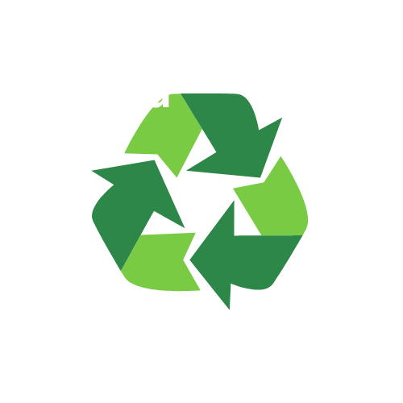
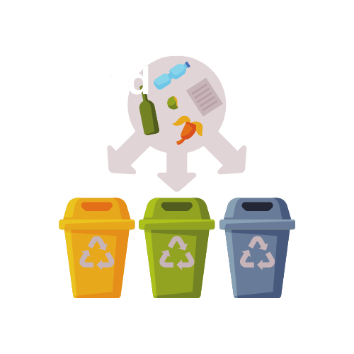

Gente
Gente

Tipos de Materiais Recicláveis
Vidro, plástico, papel, papelão, metal, madeira e orgânicos.

Como Separar os Materiais
Separe o lixo seco (reciclável) do lixo úmido (orgânico e comum) utilizando latões diferentes. Caso disponha de espaço, utilize sacos de plástico para cada um dos materiais recicláveis: vidro, plástico, metal e papel.
Benefícios da Reciclagem
A reciclagem reduz a necessidade de extrair novas matérias-primas do meio ambiente. Isso diminui os prejuízos e os danos causados à natureza, tendo menos florestas derrubadas, rios desviados, animais selvagens prejudicados ou deslocados e menos poluição da água, solo e ar.